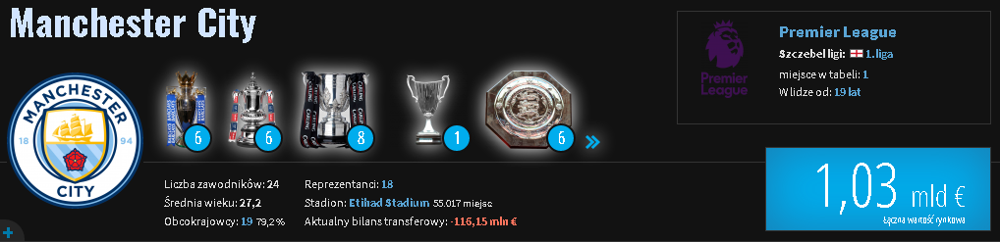

Hiszpański klub sportowy powstały w 1902 roku. Słynie głównie z sukcesów istniejącej od chwili założenia drużyny piłki nożnej,
która 34 razy zdobyła mistrzostwo Hiszpanii, 13 razy Puchar Europy/Ligę Mistrzów, a także wiele innych trofeów, w tym przyznany w 2000 roku przez FIFA tytuł najlepszego klubu w XX wieku.
Francuski klub piłkarski z siedzibą w Paryżu, rozgrywający mecze na stadionie Parc des Princes. Założony został w 1970 roku i aktualnie występuje w rozgrywkach Ligue 1.
Drużyna należy do najbardziej utytułowanych w swoim kraju, mając na koncie m.in. dziewięć mistrzostw Francji, dwanaście Pucharów Francji, siedem Superpucharów Francji, osiem Pucharów Ligi Francuskiej oraz Puchar Zdobywców Pucharów i Puchar Intertoto.

Angielski klub piłkarski z siedzibą w Manchesterze. Obecnie występuje w Premier League. Klub powstał w 1880 roku jako Saint Marks, w 1887 został przemianowany na Ardwick AFC,
a obecną nazwę nosi od 1894. Zdobył sześć tytułów Mistrza Anglii, sześć razy wygrał Puchar Anglii, sześć razy – Puchar Ligi Angielskiej, a raz – Puchar Zdobywców Pucharów. Największe sukcesy osiągnął w latach 60. i 70. XX wieku, pod kierunkiem trenerów Joe Mercera i Malcolma Allisona.
Angielski klub piłkarski z siedzibą w Liverpoolu. W sezonie 2020/2021 jego pierwsza drużyna występuje w Premier League. 19-krotnie zostawał mistrzem Anglii, 7-krotnie zdobywał Puchar Anglii oraz 8-krotnie Puchar Ligi Angielskiej.
Ponadto 6-krotnie wygrywał rozgrywki Pucharu Europy lub Ligi Mistrzów, co jest najlepszym osiągnięciem wśród wszystkich angielskich klubów.
Włoski profesjonalny klub piłkarski założony 1 listopada 1897 roku jako SC Juventus przez grupę uczniów z liceum Massimo d’Azeglio, grający od 1903 roku.
Juventus jest najbardziej utytułowanym klubem w kraju – ma na koncie trzydzieści sześć oficjalnych tytułów mistrza kraju, trzynaście Pucharów Włoch i osiem Superpucharów Włoch.
W rozgrywkach międzynarodowych zespół zwyciężył dwa razy w Lidze Mistrzów, zdobył jeden Puchar Zdobywców Pucharów, a także trzy Puchary UEFA.
Niemiecki klub sportowy z siedzibą w Monachium. 31 razy zdobył tytuł Mistrza Niemiec, 20 razy wygrał Puchar Niemiec. Ponadto, w rozgrywkach europejskich trzykrotnie triumfował w Lidze Mistrzów i trzykrotnie (przed utworzeniem Ligi Mistrzów w 1992 roku) w Pucharze Europy Mistrzów Klubowych,
dwukrotnie wygrywał Superpuchar Europy oraz po jednym razie wygrał Puchar Zdobywców Pucharów, Puchar UEFA. Czyni to Bayern jednym z nielicznych klubów, który triumfował we wszystkich możliwych turniejach rozgrywanych w Europiebrak przypisu.
© UEFA - dla Kibiców